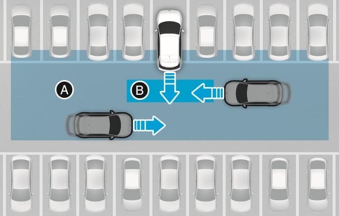

후방 교차 충돌방지 보조 (RCCA)
후진 중 후측방에서 다가오는 차량을 인식하여 충돌 위험이 판단되면 경고문과 경고음을 통해 알려주고 충돌하지 않도록 제동을 도와줍니다.

2C_RCCAOpeartionOverview
- 충돌 경고 영역
- 충돌방지 보조 영역
접근하는 차량의 속도에 따라 위험을 경고하는 시점이 다를 수 있습니다.
RCCA는 Rear Cross-Traffic Collision-Avoidance Assist의 약자입니다.